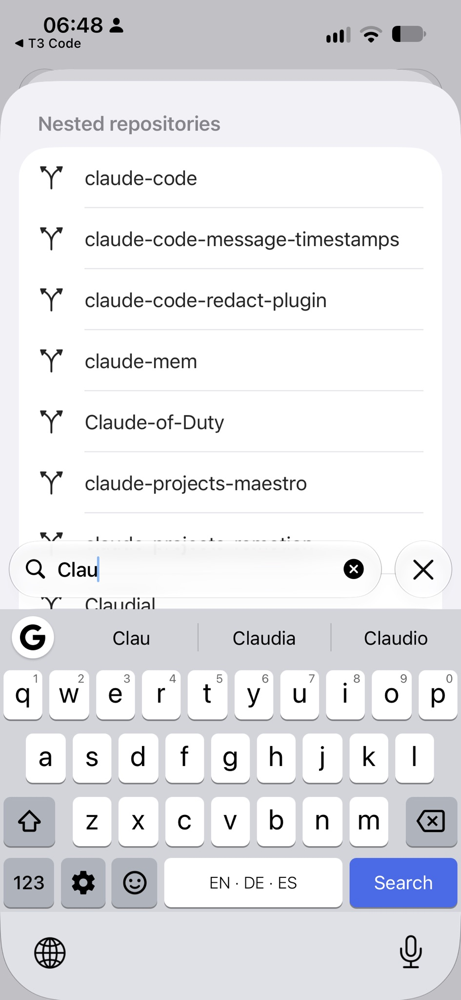
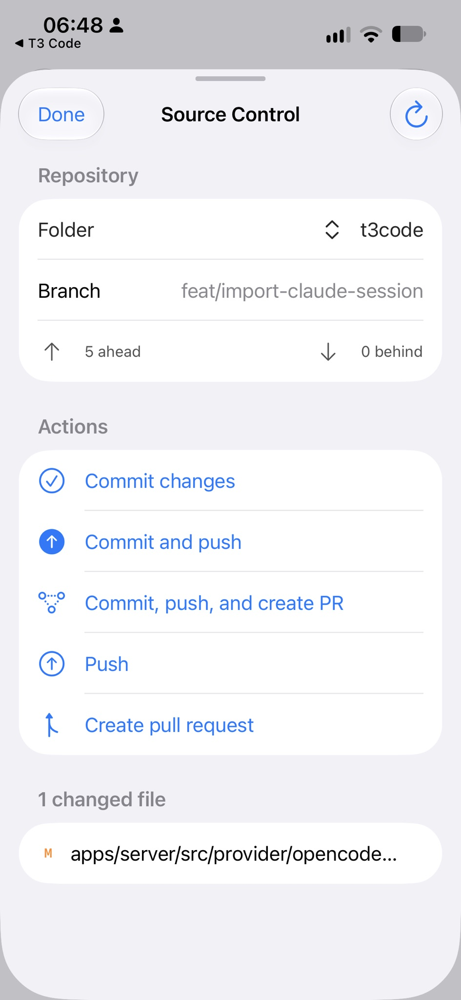

Improving the Tool That Builds the Tools
The Pet Projects saga: 1. The Vault I Could Finally Give Away · 2. Blume · 3. Improving the Tool That Builds the Tools
Last week I asked for one improvement to the tool I use every day. Nobody answered. This morning I asked my AI what it would take to build it myself.
From YouTube to my iPad in one hour
The tool is T3 Code, an app for working with AI assistants that write and change code. It runs on my Mac, and a phone app lets me follow along from the couch.
In one of his videos, Theo, who makes T3 Code, mentioned a second phone app he was working on, written in Swift, Apple's own language for iPhone apps. He had an AI agent keep it in step: every time the main app changed, the agent copied the change over.
I thought: why don't I just do that? The code was public, just not finished. So while Theo was still talking, I pointed my AI at it. Within an hour of the video it was running on my iPad and my iPhone, and my conversations showed up on all three of my devices.
I liked it better than the version in the App Store. It scrolled without glitches. It showed me older AI models the App Store app hid. It let me call up my skills, the little instruction packs I give my AI, before I had sent a first message.
A year, not three months
I started recommending it to colleagues. That meant they needed a copy.
Apple has two ways to hand out an app that isn't in the store. TestFlight, Apple's service for trying unfinished apps, gives each test version three months before it stops working. The other way lasts a year, as long as you list every device up front. We're a small company. The list fits.
So the Swift app got a link on our company's links page, under the 🌼 from this morning's post.
Three upvotes, not noticed by the maintainers
I keep all my projects in one folder. Each project inside it has its own history, the record of every change that lets you compare, undo, and share. Programmers call that a git repository.
The outer folder has no history of its own. When I open it in T3 Code, the app looks for one, finds nothing, and offers exactly one option: start a new history for the outer folder. What I wanted was a list of the projects inside, so I could pick one and work with its history.
Without it, a big part of T3 Code stayed out of reach for me: saving my changes into a project's history and reviewing them on the go, from my phone. The way around it was to open every project on its own, narrowing things down before I start. I work the other way round: one folder holding all my projects, so the AI can reach across them.
Last week I wrote that up as an idea on T3 Code's discussion board. That's the required first step. T3 Code's rules say code for a new feature is only accepted once a maintainer has approved the idea. Without a reply, there is no second step.
Six agents and a numbering problem
This morning I asked my AI what it would mean to build it myself, across every part of T3 Code: the server on my Mac and every app that talks to it.
It sent out six agents in parallel, each reading one part of the code. They came back with about 3,000 lines of changes, split into five separate proposals.
My question was the practical one:
But that would mean, basically, that I would need to run my own server and my own clients.
Only if I wanted to use it before it was officially accepted, the answer went. Then I'd need my own copy of the server, and of every app talking to it. And then there was the numbering.
T3 Code numbered every change to how it stores its data. If my version and the official one gave different changes the same number, the official app would skip a change it still needed.
Versioning things across projects is hard. Versioning across a company, or the internet, is even harder.
Closed for missing screenshots
The AI's advice was not to send the change in at all. My idea still had no approval.
Someone had already tried. Another developer had built a smaller version of the same idea, the multi-project view, and submitted it. Two days earlier, a maintainer's bot had closed it. The reason:
… no before and after screenshots or recording of the interaction.
I posted my ideas to the discussion again. Then I asked something smaller.
Could I change only the Swift version?
Yes, the AI said. The server already let the phone app choose which folder's history to work with. Only the Swift app needed changing, so it could pick a project inside my outer folder. The official server on my Mac could stay as it was.
Ten minutes later it was on my phone. I couldn't find it. I sent screenshots of where I was looking, and the AI showed me where it had put the button.
From there it went fast. I asked to pick the project when starting a new conversation, not just afterwards. A long project name pushed the rest of the line off the screen, so we capped it. I asked for a search field.


An hour after the question, I had five finished changes on my phone, and the screenshots to show them off.
Sharing the tool that builds the tools
The new version isn't behind the 🌼 on our links page yet. It will be once I upload it. That link doesn't point at one version of the app. It points at the app, and always lands on the newest one.
One link, right forever. Even for the tool that builds the tools.
The original idea is still open on T3 Code's discussion board.